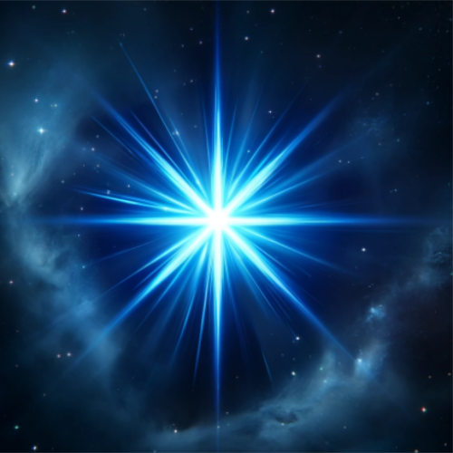
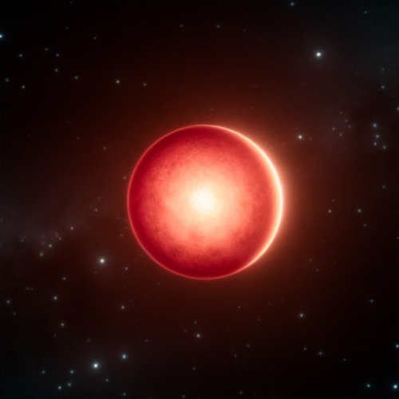
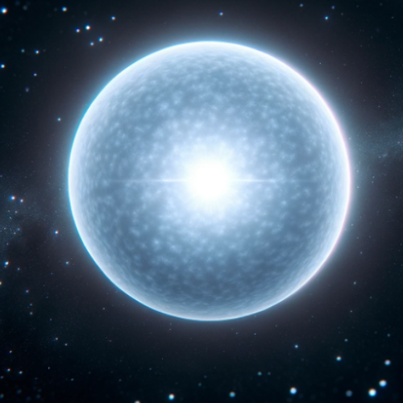
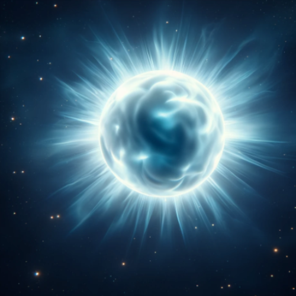

Stars are fascinating celestial objects that illuminate our night sky with their brilliant light. These massive spheres of burning gas, primarily composed of hydrogen and helium, generate energy through nuclear fusion in their cores. This process not only provides the light and heat we see but also produces the heavier elements that make up planets and life itself. From the smallest red dwarfs to the largest supergiants, stars come in a variety of sizes, colors, and stages of evolution. Studying stars helps us understand the universe's history, the life cycles of these incredible objects, and our own place in the cosmos.
| Blue Star | Red Dwarf | White Dwarf | Neutron Star |
|---|---|---|---|
|  |  |  |  |
Stephen Hawking
Look up at the stars and not down at your feet. Try to make sense of what you see, and wonder about what makes the universe exist. Be curious.